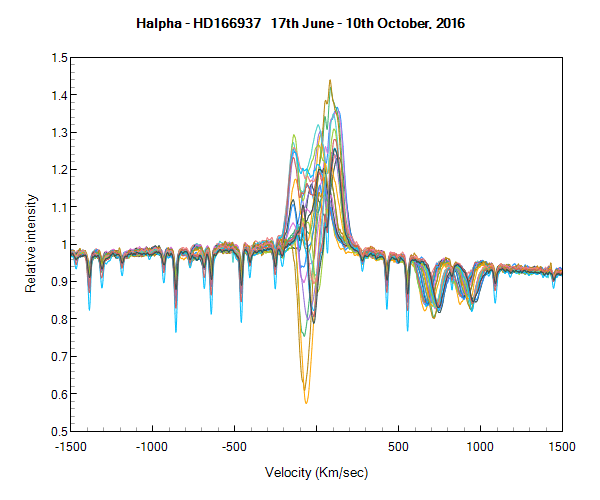
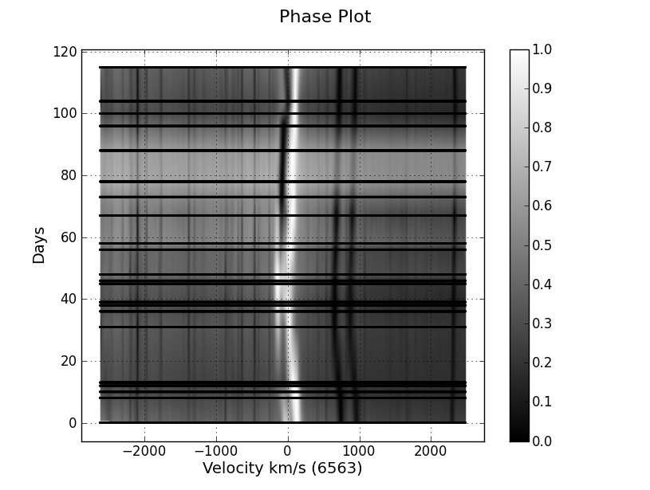

22 spectra of mu Sgr showing clear evidence of the orbital characteristics of this enigmatic binary, now 115 days through its 180 day period. The variability could show evidence of atmospheric eclipsing, together with wind variability. As the target sinks towards the dusk sky, it's unlikely that many more spectra will be available this season.

